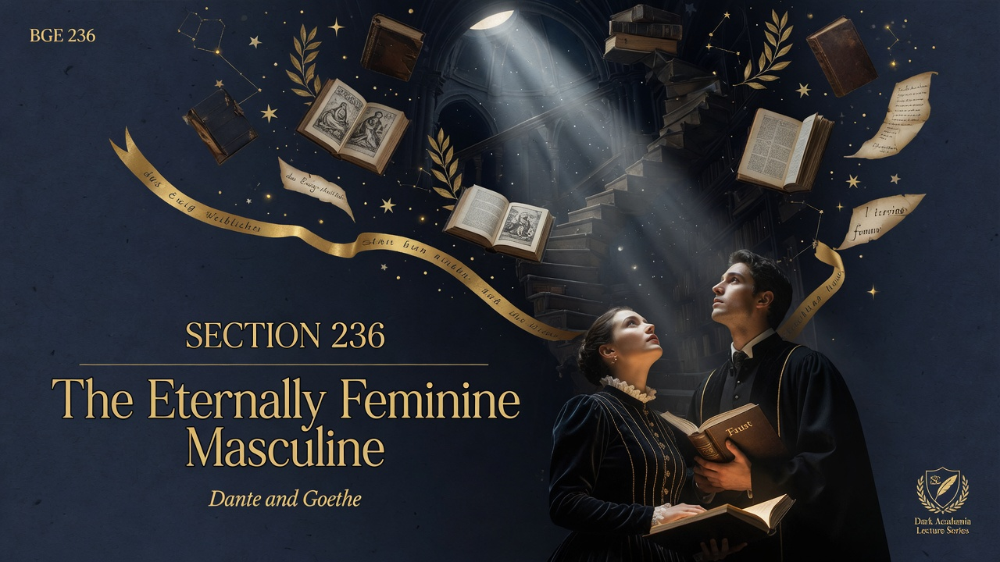
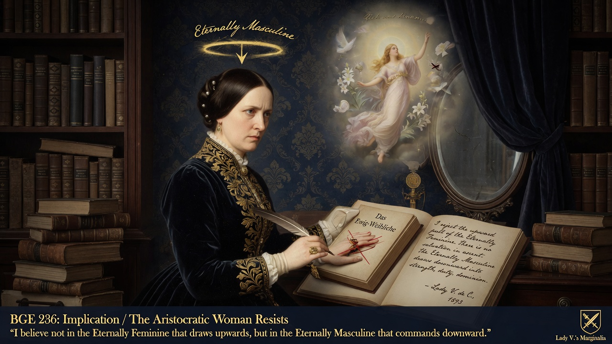

Men and women don't see each other the same way—each sex projects its own longing for something greater onto the other. These ideals reveal more about the dreamer than the person being dreamed about. Modern gender debates often ignore this ancient asymmetry.
Basically: nietzsche has no doubt that every more aristocratic woman will resist this faith. She believes the very same about the Eternally Masculine. it's the masculine that draws upward, that provides the height and the direction.
Perspectives on the eternal in the other sex are not symmetrical. Each sex projects its longing for ascent onto the other in its own way.
Contemporary debates over gender ideals often ignore this ancient asymmetry of aspiration. The free spirit notes that ideals of elevation are mutual projections that reveal more about the projector than the projected.

